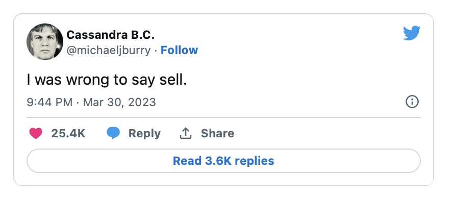
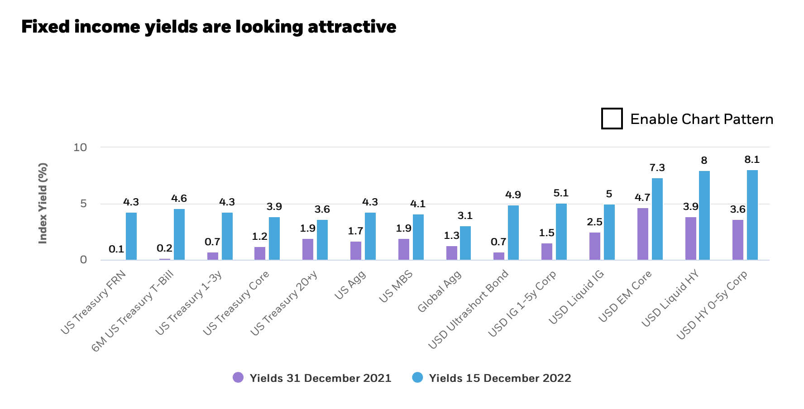

Fred's News Channel
每日新闻
投资观点
常用工具
3月31日早间新闻
根据彭博社及路透社新闻编辑整合
拜登政府要求对资产量级在1000亿到2500亿美元的中型银行加强监管。美联储的Susan Collins认为美国银行业的系统已经基本平稳，可以进一步加息。
详情链接
美国第一次申请失业补助的人数上周上涨7000，至19万8千，而持续申请失业补助的人口也上涨，达到了169万。但这个数据已经不能证明美国就业市场疲软。相反的，对应每一个失业者的，就有两个招聘不到员工的岗位。
详情链接
大空头Michael Burry发Twitter称自己推荐2月卖出是个错误的决定，并恭喜所有的低位加仓的投资者。（Michael Burry算个传奇了， 08年次贷危机时候他首先发现了房屋贷款的问题并大量做空，收益极丰。他的事迹被拍成了电影《大空头》（The Big Shot），还蛮好看的。）

个人观点：
公募基金的债券市场最近及其火热。新流入的资金量级在本周达到了5万亿美元。相对于股市的高动荡，债市可以以较低风险获取相同等级回报率的现实让无数投资者认真考虑是否股市依旧是第一选择。
下图是2021年底与2022年底各债券的回报率比较。在风险及其他因素近乎相同的情况下，债券的回报率平均上升了4%。

查看其他日期的新闻
Fred Rong
MAS Registered
RF-300558704
投资咨询,欢迎预约！
立即预约